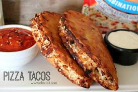

Sausage Pizza Tacos
Ingredients
- 8 crispy taco shells (stuff and stand preferred)
- 2 tablespoons olive oil
- 1 small onion, thinly sliced
- 1 small green pepper, thinly sliced
- 1/2 pound Italian sausage, casing removed
- 1 cup pizza sauce
- 3 tablespoons fresh Italian basil, chopped (divided 2/1)
- 2 teaspoons garlic powder
- 1 teaspoon dried Italian oregano
- 1-1/2 cups shredded pizza cheese
Directions
- Preheat oven to 325 degrees F.
- Coat a large frying pan with the olive oil and heat over medium heat. Add onions and saute about 3 minutes. Add peppers and continue sauteing another 8-10 minutes or until vegetables are soft but not browned. Remove onions and peppers from the pan and set aside.
- Place sausage into the same frying pan and cook until browned and cooked through, about 6 minutes. Drain off any grease in the pan and then return the onions and green peppers to the pan with the sausage.
- Add pizza sauce, 2 tablespoons of the basil, the garlic powder and the oregano. Stir together well and continue cooking another 3-4 minutes.
- Assemble your taco shells in a pan. Place a little bit of cheese in the bottom of each shell. Spoon sausage pizza mixture into each shell. Top the tacos with the rest of the cheese and bake for 7 minutes. Top with additional 1 tablespoon of basil and serve immediately.